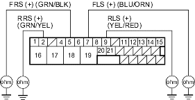

- Disconnect the ABS control unit 31P connector.
- Start the engine.
- Measure the voltage between the appropriate wheel sensor (+) circuit terminal of the ABS control unit 31P connector and body ground (see table).
DTC Appropriate Terminal 11 (Right-front) No. 5: FRS (+) 13 (Left-front) No. 7: FLS (+) 15 (Right-rear) No. 2: RRS (+) 17 (Left-rear) No. 9: RLS (+)
ABS CONTROL UNIT 31P CONNECTOR

Wire side of female terminals
Is there battery voltage?
YES - Repair short to power in the (+) circuit wire between the ABS modulator-control unit and the appropriate wheel sensor. 
NO - Go to step 4.
- Turn the ignition switch OFF.
- Check for continuity between the appropriate wheel sensor (+) circuit terminal and body ground (see table).
| DTC | Appropriate Terminal |
| 11 (Right-front) | No. 5: FRS (+) |
| 13 (Left-front) | No. 7: FLS (+) |
| 15 (Right-rear) | No. 2: RRS (+) |
| 17 (Left-rear) | No. 9: RLS (+) |
ABS CONTROL UNIT 31P CONNECTOR

Wire side of female terminals
Is there continuity?
YES - Go to step 6.
NO - Go to step 7.
- Disconnect the harness 2P connector from the appropriate wheel sensor, then check for continuity between the (+) and (-) terminals of the harness and body ground.
Is there continuity?
YES - Repair short to body ground in the (+) or (-) circuit wire between the ABS modulator-control unit and the wheel sensor.
NO - Replace the wheel sensor.